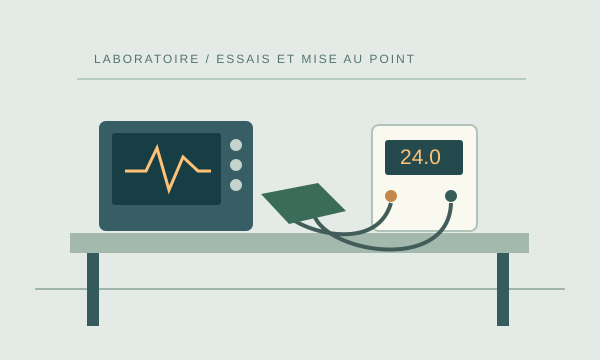

Technicien électronique
Essais et mise au point (F/H)
Rejoignez l’équipe de Claire Roussel pour préparer les essais, comprendre les anomalies et documenter les résultats.
Des projets concrets, des collègues accessibles et le temps d’apprendre nos produits.
Nos métiers associent l’observation, la précision et la coopération. Une carte conçue au bureau d’études doit pouvoir être fabriquée, contrôlée puis maintenue.
Nous nous intéressons aux réalisations concrètes et aux compétences acquises au fil du parcours. Les expériences dans d’autres secteurs peuvent apporter des méthodes utiles.

Offre ouverte le 3 novembre 2026.
Rejoignez l’équipe de Claire Roussel pour préparer les essais, comprendre les anomalies et documenter les résultats.
Un premier échange d’environ 15 minutes sur votre parcours, votre objectif et votre disponibilité.
Un entretien d’environ 40 minutes, avec un projet à expliquer et une discussion sur un schéma simple. Aucun essai sous tension n’est demandé au candidat.
Une visite de l’atelier et du laboratoire permet d’échanger sur les missions, les outils et l’intégration.
Le premier mois est structuré autour des procédures, d’un premier essai accompagné et d’un compte rendu revu avec le responsable.
Les formations à la sécurité et les autorisations nécessaires sont organisées avant toute intervention concernée. Les activités sont confiées dans le périmètre défini avec le responsable.
Les étapes de l’intégration →